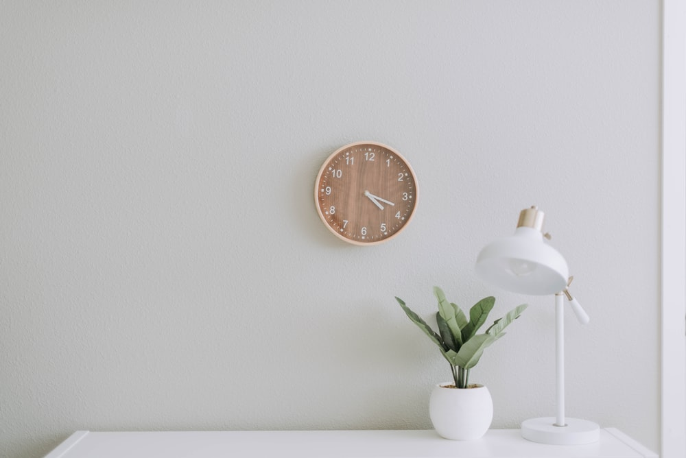

Finding Simplicity in life
Finding simplicity in life Life can get complicated really quickly but it doesn't have to be! There are many ways to simplify your life, a few of which we've explored in the past. This week we're taking a bit of a approach though, in how you can find simplicity in the life you already living.
CONTINUE READING

July 23, 2019 | 3 comments